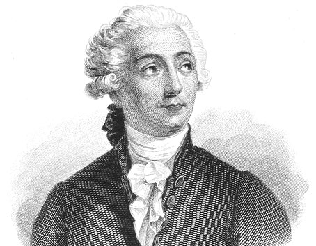

CHEMICAL REACTION
Chemical reactions are fundamental processes that involve the transformation
of one or more substances into new substances with different properties.
These reactions can occur when atoms or molecules collide with one another
and exchange electrons, rearrange their bonds, or undergo other changes in
their atomic or molecular structures. Chemical reactions are described using
chemical equations, which represent the reactants and products involved in
the reaction. The reactants are the starting materials that undergo the
reaction, while the products are the resulting substances that are formed
after the reaction. The reactants and products are separated by an arrow that
indicates the direction of the reaction. Chemical reactions can be classified
into different types, depending on the nature of the reaction and the changes
that occur during the reaction. Some common types of chemical reactions include
synthesis reactions, decomposition reactions, combustion reactions, and
oxidation-reduction reactions. Understanding chemical reactions is essential
for a wide range of fields, including chemistry, biology, materials science,
and environmental science. By studying the mechanisms and properties of chemical
reactions, scientists can develop new materials, improve manufacturing processes,
and understand the chemical processes that occur in biological systems.

Oxygen is vital to life. One interesting reaction which involves oxygen is the production of fire. Fire has fascinated people for so long, that the ancient people even regarded it as one of the earliest elements. Fire was so important to them and they described it as an element that changes everything. The earliest theory about burning was the Phlogiston Theory. This theory by George Ernst Stahl in the 17th century stated that when a material burns, it releases a substance known as phlogiston, and this theory was accepted for a very long time.
Antoine Lavoisier through his careful observations from his experiments, debunked
the phlogiston theory as he discovered that instead of releasing a substance
(phlogiston) a material accurately burns as it reacts (uses) with oxygen. This is
now known as the Theory of Oxidation, and this is accepted up to this day.

In our country, we are reminded that March is a Fire Prevention month, as this month signals the start of summer, the season when countless fires break out all over the country, "An ounce of prevention is better than a pound of cure is a motto we all need to remember. Various materials acts as fuel to sustain fire, so various fire prevention and control measures are Later as you progress in your lessons, you will get to learn more chemical reactions which may bring benefit or harm to life as well as to the environment.
Reactants and Products.
Reactants are substances that are used up to form new substances in a chemical reaction.
- Iron reacts with copper sulfate (CuSO4) and forms iron (II) sulfate (FeSO4) and copper.
- Magnesium combines with oxygen gas (O2) to produce magnesium oxide.
- Hydrogen peroxide (H2O2) in the presence of manganese dioxide (MnO2) produces water and oxygen gas.
- Acetic acid (CH3COOH) and sodium bicarbonate (NaHCO3) produce sodium acetate with the release of carbon dioxide (CO2) gas and water.
- Copper sulfate (CUSO4) reacts with sodium hydroxide (NaOH) to produce insoluble copper (II) hydroxide Cu(OH)2 and sodium sulfate (Na2SO4) solution.
Formula to each reactions
- COMBINATION (Synthesis) REACTION: A reaction when 2 or more reactants combine to form a single product.
The general formula for this reaction is:
A + B → AB
- DECOMPOSITION REACTION: In this reaction, a single reactant breaks down into simpler ones.(2 or more products). This is the reverse of combination reaction.
The general formula for this reaction is:
AB → A + B
- SINGLE DISPLACEMENT (Replacement) REACTION: This is when one element replace another element from a compound. The more active element takes the place of the less active element in a compound.
The general formula for this reaction is:
A + BC → AC + B
- DOUBLE DISPLACEMENT REACTION (Metathesis): This is when the positive ions (cations) and negative ions (anions) of different compounds switch places, forming two entirely different compounds.
The general formula for this reaction is:
AB + CD → AD + CB
- COMBUSTION (Burning) REACTION: This is when oxygen combines with a hydrocarbon (compound containing hydrogen and carbon) to form a water and carbon dioxide. Example of which is the burning of butane gas.
C4H10 + O2 → CO2 + H2O
- ACID-BASE REACTION: This is a special kind of double displacement reaction that takes place when an acid and base react with each other. The H+ of the acid reacts with the OH- of the base forming water. The other product is salt. Example of which is:
HCI + NaOH → NaCI = H2O
Steps in balancing equation
Balancing a chemical equation involves adjusting the coefficients (numbers in front of the chemical formulas) so that the number of atoms of each element is the same on both sides of the equation. Here are the steps:
- Write the chemical equation: Start by writing the chemical equation for the reaction, including the correct chemical formulas for all reactants and products.
- Count the atoms of each element: Count the number of atoms of each element on both sides of the equation. This will help you determine which elements need to be balanced.
- Balance the most complex molecule: Look for the most complex molecule in the equation and balance it first. This will often involve adding coefficients to the other molecules in the equation.
- Balance other molecules: Once you have balanced the most complex molecule, balance the other molecules in the equation by adding coefficients as needed.
- Check your work: Double-check your work by counting the number of atoms of each element on both sides of the equation. The number of atoms of each element should be the same on both sides.
- Reduce coefficients to smallest whole numbers: If necessary, divide all coefficients by the greatest common factor to get the smallest whole-number coefficients.
- Add state symbols and other information: Finally, add state symbols (s, l, g, aq) and other information as needed to complete the equation.
Collision Theory
Collision theory is a concept in chemistry that explains how chemical reactions occur and how the rate of a reaction is affected by various factors. According to the theory, for a reaction to occur, reactant particles must collide with sufficient energy and with the correct orientation.
The theory states that for a successful reaction to occur:
- The reactant particles must collide with each other.
- The colliding particles must possess enough energy to break their existing bonds and form new ones.
- The colliding particles must collide with the correct orientation or alignment, so that the reacting groups can interact.
The rate of a chemical reaction depends on the number of successful collisions that occur in a given unit of time. Factors that affect the rate of a reaction according to collision theory include:
- Temperature: Increasing the temperature increases the energy of the particles, making them move faster and collide more frequently.
- Concentration: Increasing the concentration of reactants increases the number of collisions between particles, and therefore increases the rate of the reaction.
- Surface area: Increasing the surface area of a solid reactant increases the number of collisions between particles, and therefore increases the rate of the reaction.
- Catalysts: Catalysts provide an alternate reaction pathway that requires less energy, and therefore increase the rate of the reaction.
Overall, collision theory helps to explain how chemical reactions occur and provides insight into how scientists can manipulate reaction conditions to optimize the rate and yield of a reaction.
Summary
- Reactants are the substances that enter into a chemical reaction, and products are the resulting substances. Substances that undergo a chemical reaction experience a change in their physical and chemical properties.
- When a physical change occurs there is no breaking and forming of bonds. There are certain things that will help us identify if a chemical reaction has taken place. We call these evidences of chemical reactions. These are: production of light, evolution of gas, temperature change, color change, and formation of precipitate.
- A chemical equation is a chemist’s shorthand for a chemical reaction. The equation distinguishes between the reactants, which are the starting materials and the products which are the resulting substance/s. It shows the symbols or formulas of the reactants and products, the phases (solid, liquid, gas) of these substances, the ratio of the substances as they react.
- Chemical reactions are classified in to the following types:>br> combination: A + B → AB
decomposition: AB → A + B
single displacement: A + BC → AC + B
double displacement: AB + CD → AD + CB
combustion ( reaction with oxygen producing carbon dioxide and water),
acid-base: reaction between acid and base
- COLLISION THEORY: Reactions can only happen when the reactant particles collide. Reactants should have sufficient energy, and their molecules should be in proper orientation for a successful collision to happen.
- Activation Energy, Ea, is the minimum amount of energy needed for a reaction to occur.
- The rate of chemical reaction is affected by the following factors: temperature, surface area of reactants, presence of catalyst, concentration of reactants.
- Every factor that affects reaction rate can be understood relative to Collision theory.
Take the Quiz